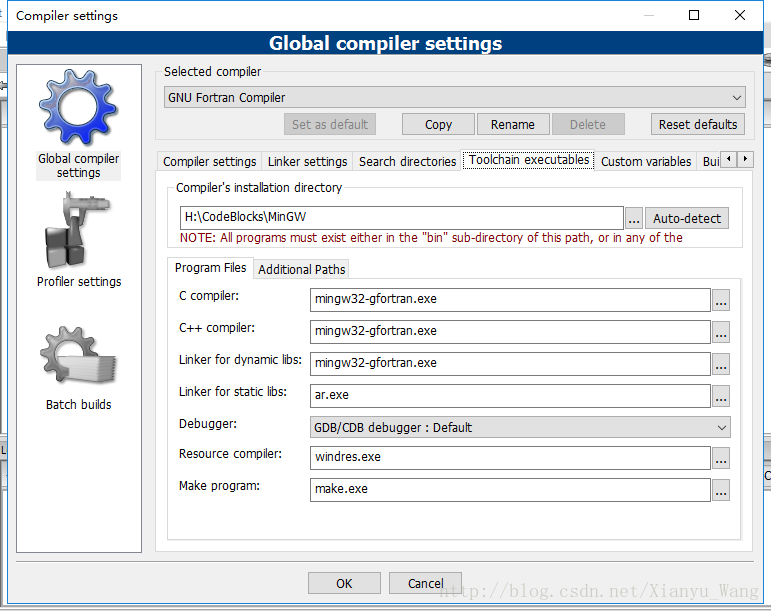
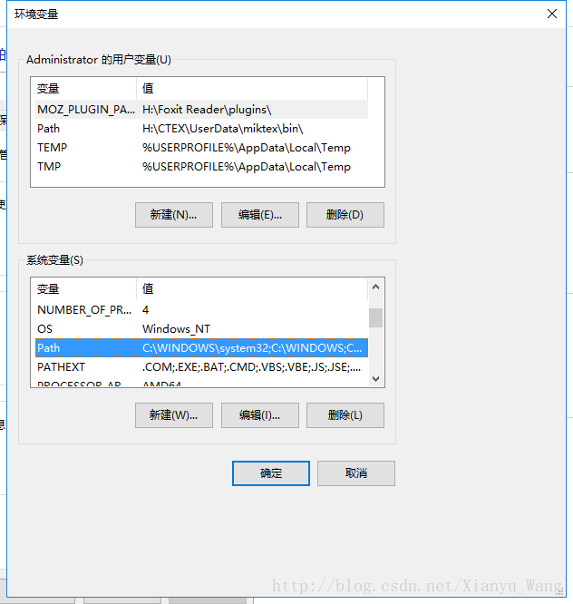
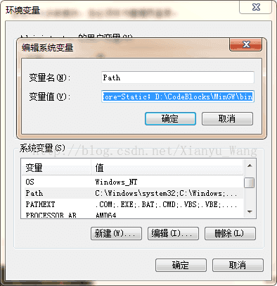
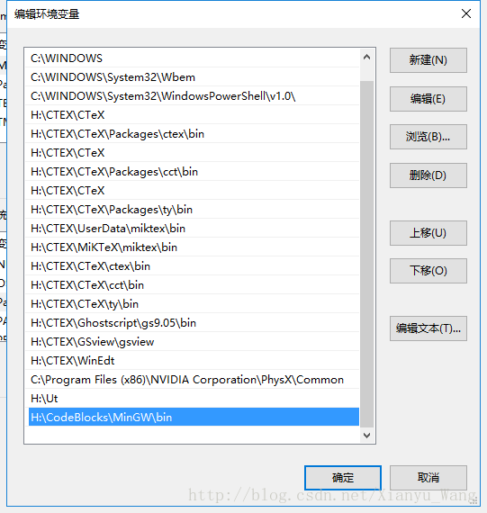

JKTEBOP code (http://www.astro.keele.ac.uk/jkt/codes/jktebop.html) 是用来做双星以及系外行星的光变曲线的拟合的程序，该程序托生于EOP program，用Fortran写成，可读性好，运行结果可信度高，现在被诸多学者使用，有较为丰厚的科学产出。
但是该程序基于Fortran，大多数人对于Fortran程序的运行不是很熟悉，假如你正在使用LINUX系统，事情就变得简单了很多，在terminal下敲入
1 | gfortran -o jktebop jktebop.f |
运行完上述代码之后，我们可以看到.out .fit .par 为后缀的文件，即输出文件。
可当你正在使用Windows的时候，事情就稍微有一点复杂。
一、安装codeblocks
首先你需要安装codeblocks来编译运行Fortran源文件，一般的codeblocks的默认你写的是c/c++语言，所以当你安装好codeblocks之后需要修改一些环境变量。
1. 修改setting
setting->environment->manage->勾选fortran source files （f77 f90 f95 ）
setting->compiler->select compiler->GNU FORTRAN compiler（set as default）
其他设置如下图

2.加入path
右键单击我的电脑->属性->高级系统设置->环境变量->系统变量下有PATH，双击PATH

出现

或者

这里要在变量值后添加路径，并与之前的路径分开
在上述的框里更新codeblocks的dll文件路径，如果没有就新建，如果是错的就编辑，注意路径一定是codeblocks\mingw\bin，这里要换成你自己的bin的路径。
以上，就是codeblocks的运行环境的配置了。
#二、运行JKTEBOP
##1.在codeblocks下运行编译f文件
会出现jktebop的应用程序文件以及o文件
##2.摁住shift键的同时在当前f文件所在的文件夹的空白处单击右键->在此处打开命令窗口
出现命令窗口后，键入
1 | jktebop **.in |
即可出现运行结果！